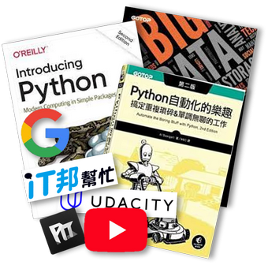

1 兩百字內的個人簡介。
我畢業於環工交大研究所，在環工顧問公司擔任專案經理約5年，後在宗教團體工作3年多，做行政類型的工作，兩種工作都有接觸到些軟體資訊，包括請工程師製作/維護網頁、程式、大型資料統計。
我畢業於環工交大研究所，在環工顧問公司擔任專案經理約5年，後在宗教團體工作3年多，做行政類型的工作，兩種工作都有接觸到些軟體資訊，包括請工程師製作/維護網頁、程式、大型資料統計。
自己會用excel來debug，再請工程師修正；或利用excel函數、錄製巨集、Power Query等工具，做資料量數十萬以下的統計處理，減少人工及錯誤率。
在此過程漸漸對寫程式感興趣，經過PTT網友分享、網頁上及書籍學習，今年7月決定轉職軟體工程師。
2 為了成為軟體工程師，曾做過什麼努力？
- 網路、ptt查看網友的轉職分享、詢問軟體業親友，確認所需條件，研究並添購合適的筆電。
- 網路資源、書籍學習Python與資料分析。 
- Youtube彭彭的課程－Javascript網頁前端工程入門/進階教學，HTML、CSS、JavaScript網頁前端工程，看完並跟著練習，配合google搜尋進一步了解、學習。
3 如果參與這個計畫，會怎麼安排學習時間？
我目前是一個月6~7天的兼職工作，若有幸成為Bootcamp第三屆學員，會調整為全職投入。原則上會安排每天8小時學習，並視狀況調整學習時間。
我目前是一個月6~7天的兼職工作，若有幸成為Bootcamp第三屆學員，會調整為全職投入。原則上會安排每天8小時學習，並視狀況調整學習時間。
4 是否有想要加入的軟體公司？為什麼想加入該公司？
我對資料庫、數據分析或後端工作較感興趣，但目前還沒有特定的公司想加入。
我對資料庫、數據分析或後端工作較感興趣，但目前還沒有特定的公司想加入。
5 請描述一件你曾經碰到最困難的事情，如何克服？
最困難的是生活沒動力與對未知的恐懼感。
以往我是主管、同事一致認同聰明有能力的人，會自己學習excel函式及工具，建立小型資料庫、簡易查詢功能及套表，避免重複性工作，幫助自己或同事提高工作效率。
最困難的是生活沒動力與對未知的恐懼感。
以往我是主管、同事一致認同聰明有能力的人，會自己學習excel函式及工具，建立小型資料庫、簡易查詢功能及套表，避免重複性工作，幫助自己或同事提高工作效率。
當離職開始看書自學Python，離開了工作環境，沒有需要解決的問題，沒有學習動力。我知道自己是愈挫愈勇型的，最怕的是失去目標，生活沒勁。
感謝遇到彭彭老師辦的Wehelp Bootcamp，在看教學影片及google相關資訊，試著做申請網頁，雖然有遇到困難，花了很多時間，但是有了初步的成果，心裡感到很踏實～

6 關於這份申請網頁，請分享一個你開發時的技術心得。
探索CSS－逐步實現心裡藍圖
從小圖製作、素材蒐集調整，用ppt配幾個背景圖挑選，到邊做邊上網學。
探索CSS－逐步實現心裡藍圖
從小圖製作、素材蒐集調整，用ppt配幾個背景圖挑選，到邊做邊上網學。
以往都用Office排版，首次DIY在網頁上，覺得不太容易，不會的就google，一邊調整。
有的我做不出來，如邊框隨螢幕縮放外，漸層隨不同位置改變透明度，最後折衷如現在的網頁
設定調整CSS及RWD，不知不覺時間就過了，再看手機蝦皮APP，一些精緻的遊戲介面互動，不由得感歎，工程師投注的時間應該不少…
7 從上次提出申請至今，多做了哪些努力？
( 第一次申請不用回答 )
( 第一次申請不用回答 )
8 其他想要對我們說的事情？
I'm ready.
Please pick me!
I'm ready.
Please pick me!